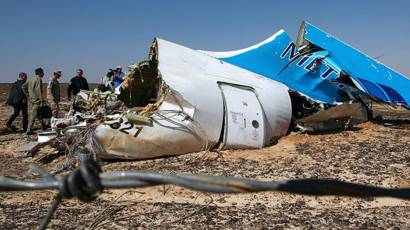
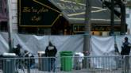
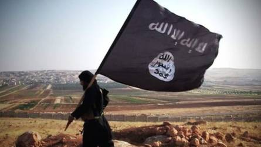
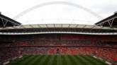
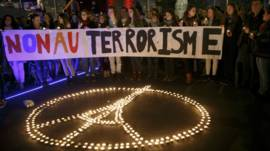

Quảng Cáo

Nga nói khủng bố khiến phi cơ của Nga bị đâm
Nga nói hành động khủng bố đã khiến máy bay của Nga bị đâm ở Ai Cập hồi tháng 10 và khiến 224 người tử vong.
17 tháng 11 2015 | Thế giới
Phi cơ Nga:'Bom trong khoang hành lý'
Nga nói chưa kết luân về việc vụ rơi máy
bay
Máy bay hàng không Nga nói 'rơi vì bom'
17 tháng 11 2015 | Thế giới
Phi cơ Nga:'Bom trong khoang hành lý'
Nga nói chưa kết luân về việc vụ rơi máy
bay
Máy bay hàng không Nga nói 'rơi vì bom'

Bóng Đá: Tuyển Anh thắng Pháp 2-0
Tuyển Anh thắng Pháp 2-0 trên sân
Wembley nhờ công của ALi ở
phút 39 và Rooney phút 47, trong
trận cầu diễn ra chỉ vài ngày sau
vụ khủng bố Paris.
5 giờ trước | Thế giới
Anh Pháp giao hữu trận thách thức khủng bố
Tham nhũng , ma túy
đông gấp bội 'đối lập'?
Chủ tịch nước Trần Đại Quang cho biết tỏng hơn 3 năm qua ,
Bộ này xác định có 350 đối
tượng 'lập hộ chống đối'.
17 tháng 11 2015
Luật báo chí Việt Nam là "Vũ khí phe bảo thủ"?
Nhân sự là tư duy chính trị
của Đảng
Charlie Sheen xác nhận nhiếm HIV
17 tháng 11 2015 | Thế giớiBắt nghi can vụ giết bà Hà Linh
17 tháng 11 2015 | Việt NamÚc nhận 5 ngưới tỵ nan Syria đầu tiên
17 tháng 11 2015 | Thế giớiTổng thống Pháp thề phá tan IS
17 tháng 11 2015 | Thế giớiSam Rainsy hoãn ngày về nước
17 tháng 11 2015 | Thế giớiNhiều bang của Mỹ ngưng nhận tỵ nạn Syria
17 tháng 11 2015 | Thế giớiCựu cán bộ an ninh bị đi tù vì Facebook
17 tháng 11 2015 | Việt NamAnh -Pháp:'Không phải trận cầu thông thường'
17 tháng 11 2015 | Thể thaoVietcombank ngưng dịch vụ ATM cho ngoại kiều
17 tháng 11 2015 | Kinh tếNghe/Xem >
4:47
Đại biểu Nghĩa hỏi thủ tướng 'quá khó'
17 tháng 11 2015 |
Multimedia
17 tháng 11 2015 |
Multimedia
4:47
Tưởng niện các nạn nhân Paris tại Hà Nội
16 tháng 11 2015 |
Multimedia
16 tháng 11 2015 |
Multimedia
4:47
Cảnh sát giải cứu con tim tại Paris
14 tháng 11 2015 |
Multimedia
14 tháng 11 2015 |
Multimedia
4:47
Thủ tướng'sẽ không đi ra ngoài đường lối'
17 tháng 11 2015 |
Multimedia
17 tháng 11 2015 |
Multimedia

4:47
Xả súng ở rạp hát Bataclan, Paris
16 tháng 11 2015 |
Multimedia
16 tháng 11 2015 |
Multimedia
4:47
Paris sau các vụ tấn công tối 13/11/2015
14 tháng 11 2015 |
Thế giới
14 tháng 11 2015 |
Thế giới
Điểm nhấn >
IS là gì và nguy hiểm đến đâu?
BBC tiếng Việt điểm lại các quan điểm đánh giá thực tế thực lực quân sự cảu nhà nước hồi giáo IS16 tháng 11 2015 | Thế giới

Quan điểm >
Nhiều người hồi giáo 'đã khóc' trước Bataclan
Nhà báo tự do Phạm Công Phong nói nhiều người Hồi giáo đã thực sự khóc và hát La Marselaise ở nơi xảy ra vụ khủng bố Paris.15 tháng 11 2015
Kinh tế >
Cổ phiếu dịch vụ giảm vì tấn công tại Paris
Cổ phiếu của các hãng hàng không du lịch của châu Âu bị giảm mạnh vào thứ Hai vì nhà đầu tư lo lắng về các cuộc tấn công ở Paris17 tháng 11 2015
Thể thao>

Anh-Pháp giao hữu: Trận cầu đỉnh kout
Tuyển Pháp sẽ đến Anh với một thông điệp của sự đề kháng sau vụ tấn công ở đẫm máu17 tháng 11 2015
Xã hội>
Dấu ấn Mao : Từ Hồng vệ binh với ông Tập
Bộ đồ đặc trưng thời cách mạng Văn hóa được kể xấu trong phim phương Tây ưa dùng , và cũng là lựa chọn ưa thích của chủ thịch TQ13 tháng 11 2015
Học tiếng Anh>
Máy bay hàng không Nga bị bắn rơi tại Sinai, Ai Cập
Viên chức hàng Không nga loại bỏ yếu tố lỗi kĩ thuật, lỗi phi công trọng vụ rơi máy bay tại Sinai, Ai Cập13 tháng 11 2015
Học viện Báo Chí>
Hình ảnh >
Giải ảnh CGAP2015
Tác giả VN là trong số đoạt giải cuộc thi ảnh CGAP nhằm cho thấy cuộc sống người nghèo được cải thiện thêm qua các dịch vụ tài chínhẢnh dự thi Natinal Geographic
Tác giả VN là trong số đoạt giải cuộc thi ảnh CGAP nhằm cho thấy cuộc sống người nghèo được cải thiện thêm qua các dịch vụ tài chínhBí ấn những chuyến tàu ma ở Anh
Quảng cáo
Đài Loan , Tây Tạng và các quốc gia không tồn tại
Nghi phạm chính vụ Paris :Abdelhimid Abaaout
Người tham nhũng 'Xử lý người chống'

Nhà nước hồi giáo thay đổi chiến thuật
K-9 là gì Việt Tân ứng xử ra sao?
Dùng vũ lực sẽ gặp cách mạng từ dưới lên ?

Luật báo chí Việt Nam 'Vũ khí của phe bảo thủ'?
'Côn đồ đánh chứ không phải công an'
Một chút quyền lợi có lung lạc được bạn?
Đọc nhiều nhất
Việt Nam : 'Người tham nhũng xử lý người chống'
1
Tham nhũng, ma túy đông gấp bội 'đối lập'
2
Cựu cán bộ an ninh bị đi tù vì Facebook'
3
Bắt nghi can vụ giết bà Hà Linh
4
Thủ tướng và cái giá phải trả của sự ngạo mạn
5
Nga nói khủng bố khiến phi cơ của Nga bị đâm
6
IS là gì và nguy hiểm tới đâu
7
Charlie Sheen xác nhận bị nhiễm HIV
8
Bí ẩn những chuyến tầu ma ở Anh
9
Bóng đá :Tuyển Anh thắng Pháp 2-0
10
BCC tiếng Việt trên mạng
Các dịch vụ
RSS